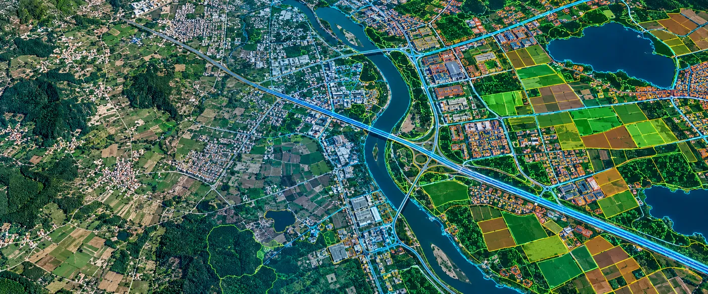

The Assignment
Large-scale government mapping and land-administration programmes require spatial information that is accurate, consistent and structured for use across multiple applications.
CS TECH Ai supported statewide geospatial programmes by processing high-resolution imagery and transforming raw spatial data into application-ready mapping information. The objective was to create a reliable geospatial foundation that could support land administration, planning, mapping and broader government GIS workflows.
Our Approach
CS TECH Ai applied its geospatial data-processing and mapping capabilities to prepare imagery and associated spatial information for large-area GIS applications.
The engagement involved:
- Processing of high-resolution imagery
- Georeferencing of imagery within the required spatial reference framework
- Image correction using Ground Control Points (GCPs) collected through DGPS survey
- Orthorectification of imagery
- Processing and transformation of raw geospatial data
- Digitization and extraction of spatial features
- Creation of structured GIS information
- Preparation of data for mapping and land-information applications
- Quality checks before delivery for downstream GIS use
The workflow transformed large volumes of imagery into geographically referenced information that could be used consistently across statewide mapping applications.
From Imagery to Structured Spatial Information
The processing workflow can be represented as:
High-Resolution Imagery → Georeferencing & Correction → Image Processing → Feature Digitization → GIS Data Creation → Quality Assurance → Application-Ready Spatial Information
CS TECH Ai's documented processing capability includes correcting acquired imagery using DGPS-derived Ground Control Points and assigning geographic coordinates so that imagery is brought into the required geographical frame of reference.
Supporting Statewide Mapping
The processed geospatial information can provide the foundation for applications including:
- Statewide base mapping
- Land administration
- Cadastral and parcel-related workflows
- Government GIS databases
- Planning and development
- Spatial-information management
- Enterprise use of government geospatial information
CS TECH Ai's experience extends from cadastral mapping and land-parcel generation through to enterprise deployment of geospatial information for government organisations.
Spatial Data Infrastructure
At a broader level, processed and standardized spatial information can also support Spatial Data Infrastructure environments where geographic information needs to be consolidated, catalogued, shared and accessed by multiple stakeholders.
CS TECH Ai's SDI capabilities include data collection and processing, spatial-data standardization, metadata creation, database modelling, data consolidation and geoportal-based information access.